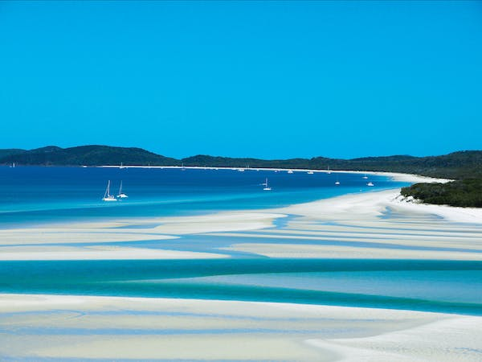
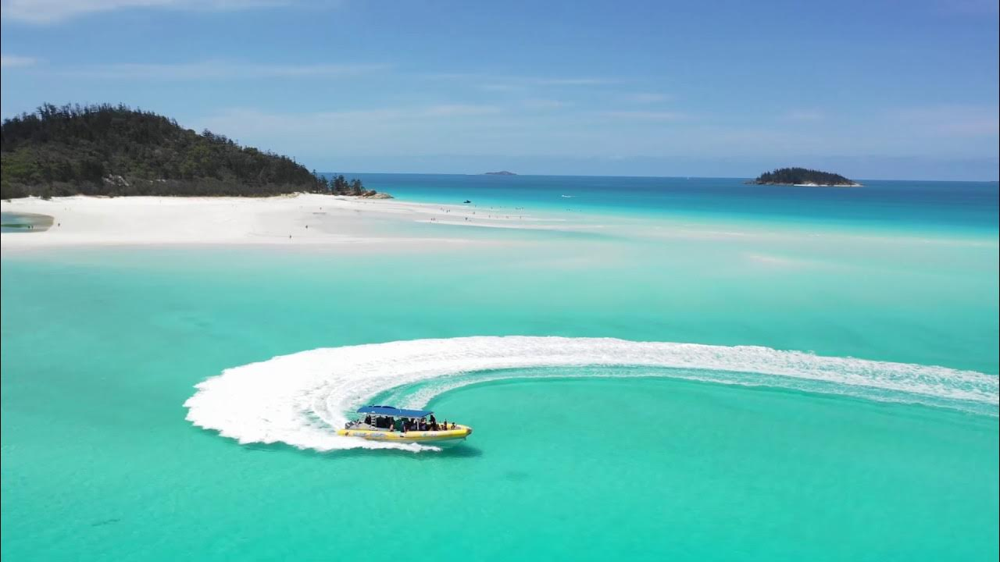
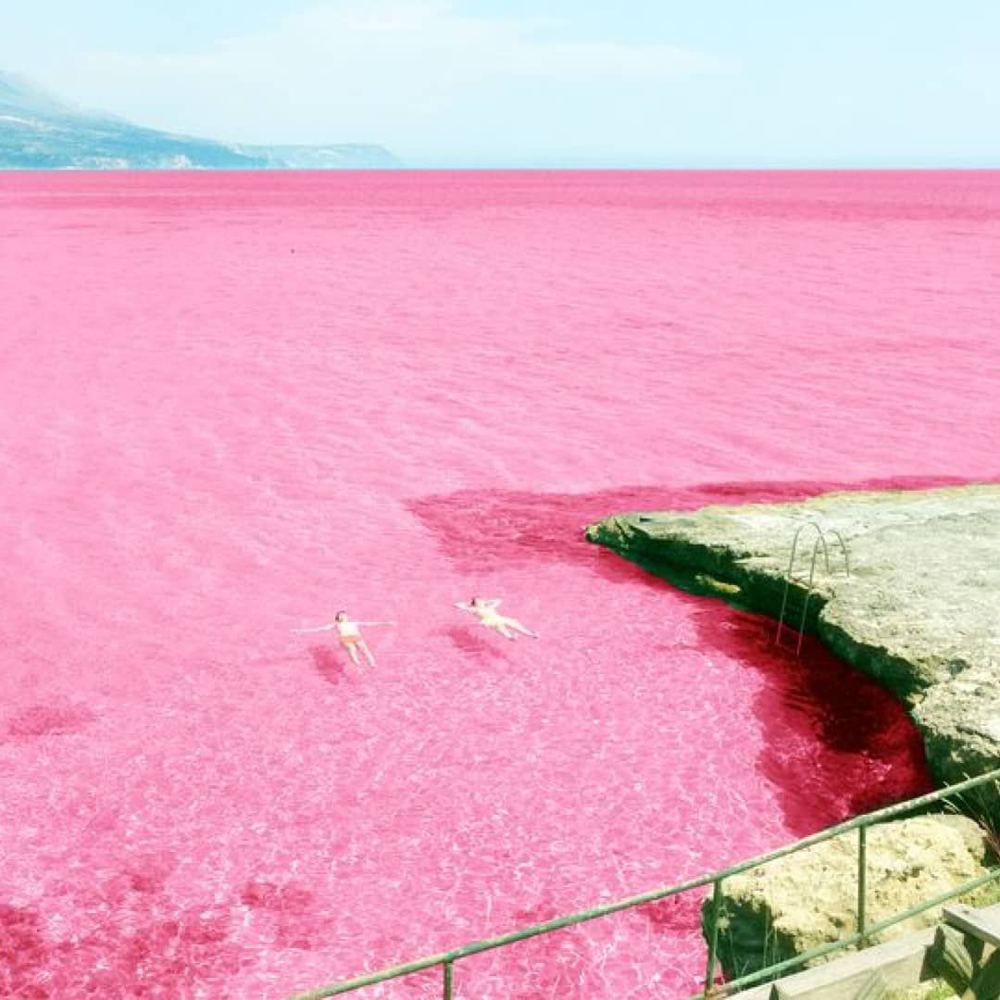
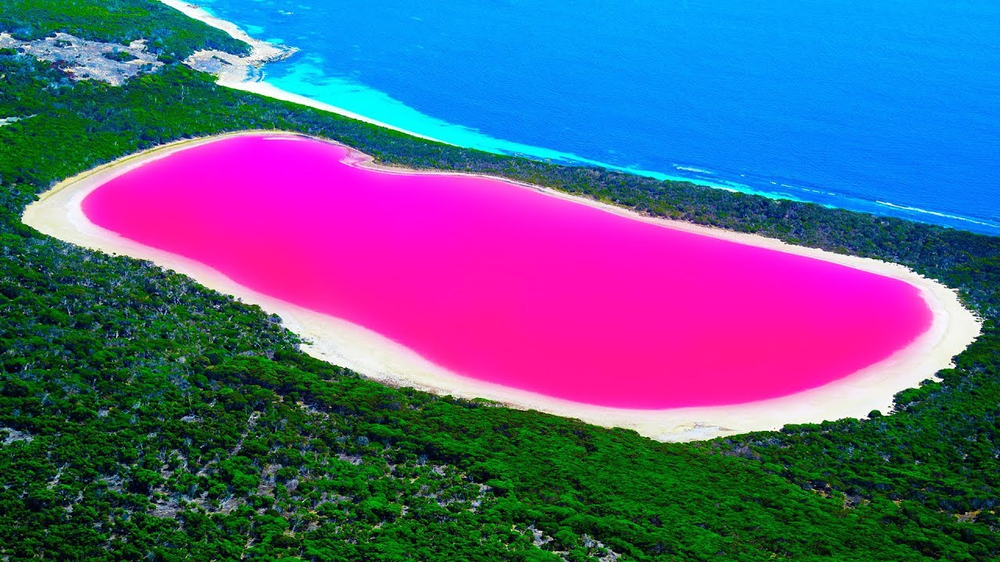

HOME
1.White haven Beach

Whitehaven Beach is a pristine, award winning beach on Whitsunday Island,
the largest of the 74 islands in the Whitsundays. Whitehaven Beach stretches over
seven kilometres and boasts brilliant white silica sand that is among the purest in
the world

2.Lake Hillier

The reason of its unique colour is still a topic that is not fully understood by
scientists, although most suspect it has to do with the presence of the Dunaliella
salina microalgae. The Dunaliella produces carotenoids, a pigment found in carrots
as well. But the presence of halophilic bacteria in the salt crusts could be another
explanation. A reaction between the salt and the sodium bicarbonate that is found
in the water may cause it as well.

3.Bay of Fires

The Bay of Fires is known all over the world for its extraordinary clear blue
seas, brilliant white beaches and striking orange lichen-cloaked boulders.Explore
the vast white-sand beaches and turquoise seas between Anson’s Bay and
Eddystone Point or discover the many beaches like the Gardens, Jeanneret,
Swimcart and Cosy Corner.

4.Wave Rock

Located near the Wheatbelt town of Hyden, is one of Australia’s most recognisable
landforms.Rising 15 metres from the ground and more than 100 metres long, the rock
looks like a giant surf wave of multicoloured granite about to crash onto the bush below.
It’s believed this amazing formation was more than 2,700 million years in the making.
Take a bush walk around the rock to see native flowers and birds. The rock also plays
host to a popular music festival each year in spring.